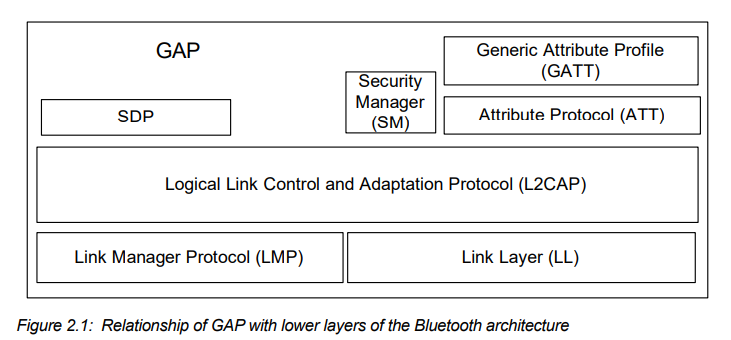
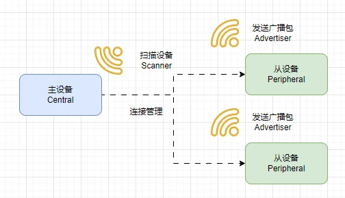
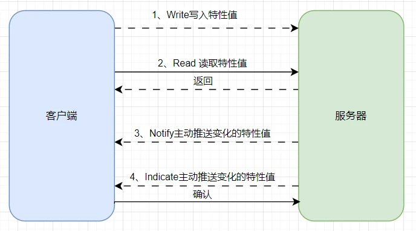
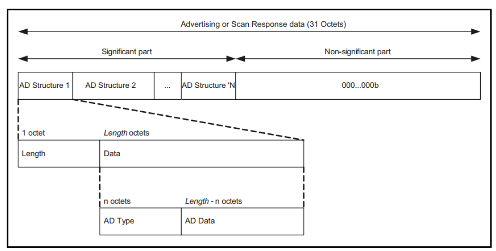
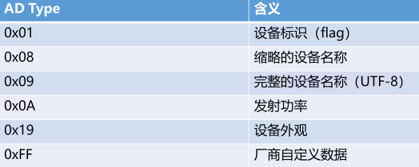
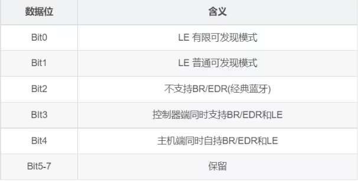
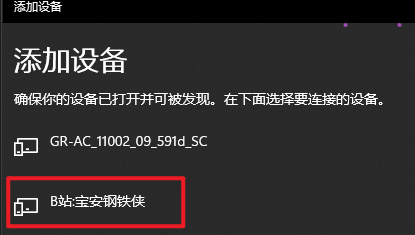
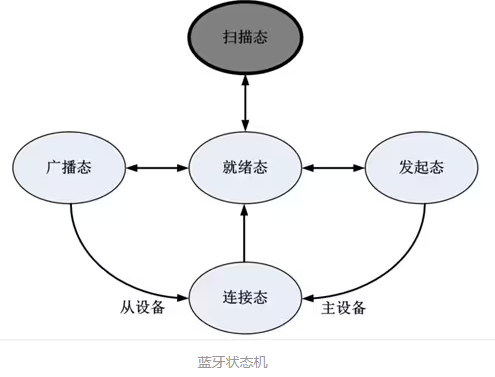

12.BLE蓝牙⭐⭐⭐
BLE（蓝牙低能耗，Bluetooth Low Energy）是一种无线通信技术，主要用于短距离的数据传输。它的设计目的在于低功耗和高效率，适合于需要长时间运行而不频繁充电的设备。
参考链接：https://docs.micropython.org/en/v1.23.0/library/bluetooth.html
BLE的特点
- 低功耗：BLE设备在待机时消耗的电量非常少，这使得它们可以使用小型电池运行很长时间，甚至几年。
- 短距离：BLE通常在10米到100米的范围内工作，适合家庭、办公室等环境。
- 快速连接：BLE可以快速建立连接，减少了设备之间的响应时间。
- 数据传输：适合传输小量数据，比如传感器读取、健康监测数据等。
蓝牙协议栈

GAP（Generic Access Profile）和 GATT（Generic Attribute Profile）是蓝牙低功耗（BLE）中的两个核心协议。它们分别定义了设备之间的通信方式和访问规则。以下是这两个协议的简要介绍：
1. GAP 协议
GAP是蓝牙低功耗的通用访问配置文件，定义了设备之间如何发现、连接和交换数据的基本规则。GAP是BLE通信的基础，负责管理设备的发现和连接过程。
主要特点：
- 设备角色：GAP定义了设备在BLE通信中的角色，包括：
- 广播设备（Advertiser）：发送广播包以进行设备发现。
- 扫描设备（Scanner）：监听并响应广播包，发现其他设备。
- 主设备（Central）：发起连接的设备（通常是手机或主控制器）。
- 从设备（Peripheral）：被连接的设备（如传感器、穿戴设备）。
- 设备发现：GAP定义了设备如何通过广播和扫描发现其他设备。设备可以处于可发现模式或不可发现模式。
- 连接管理：GAP负责建立、管理和终止连接。它处理连接间隔、超时和其他连接参数。
应用场景：
GAP广泛应用于各种BLE设备之间的发现和连接过程，确保设备能够有效地找到并连接到彼此。

2. GATT 协议
GATT是蓝牙低功耗中的一种通用属性配置文件，主要用于定义如何在BLE设备之间传输数据。它提供了一种标准化的方式来组织和描述设备中的数据。
主要特点：
- 服务和特性：GATT基于服务和特性构建，服务是一组相关的特性。每个服务和特性都有唯一的UUID标识符。
- 数据模型：GATT使用层次结构的数据模型，设备通过服务和特性与其他设备进行交互。
- 数据传输方式：GATT支持读取、写入、通知和指示等操作：
- 读取（Read）：客户端可以请求服务端读取特性值。
- 写入（Write）：客户端可以向服务端写入特性值。
- 通知（Notify）：服务端可以主动向客户端发送特性值的变化。
- 指示（Indicate）：服务端向客户端发送特性值的变化，并等待客户端的确认。
应用场景：
GATT通常用于传感器、健康设备、智能家居设备等场景，如心率监测器、温度传感器等。这些设备通过GATT服务和特性与其他BLE设备（如手机应用）进行数据交换。

总结🙃🙃🙃
- GAP：负责设备发现和连接管理，定义设备的角色和连接过程。
- GATT：负责设备之间的数据交换和数据组织，通过服务和特性来定义如何读取、写入和通知数据。
这两个协议相辅相成，构成了蓝牙低功耗通信的基础，使得不同设备能够高效地进行数据交换和管理。
蓝牙广播数据格式
概述
蓝牙广播包的最大长度是37个字节，其中设备地址占用了6个字节，只有31个字节是可用的。这31个可用的字节又按照一定的格式来组织，被分割为n个AD Structure。

每个AD Structure包含3部分内容，分别是：
- Length(1字节): 广播数据包的长度
- AD Type(1字节)： 广播的类型
- AD Data（n字节）: 数据
一个笔试题
下面有一条广播数据，你能把分析一下它所表示的含义吗？
[codeblock]常用的广播类型如下：

AD TYPE为0x01时，它的含义说明：

我们的设备只支持BLE, 不支持经典蓝牙, 并且它是处在普通可发现模式，
所以0x01类型广播包对应的值我们填写为：0b0000 0110 即16进制的 0x06
发送蓝牙广播数据所使用的api如下：
[codeblock]其中第1个参数是时间，单位为ms, 范围为20ms-625ms, 如果你设置的时间超过625ms, 其它设备可能就收不到你的广播了
示例代码
导包
[codeblock]初始化并激活蓝牙设备
[codeblock]发送广播数据
[codeblock]终端查看设备

答案：🙃
前面题目答案
[codeblock]蓝牙外观查询表
Key | Value | Description |
0x0000 | Unknown | None |
0x0040 | Generic Phone | Generic category |
0x0080 | Generic Computer | Generic category |
0x00C0 | Generic Watch | Generic category |
0x00C1 | Watch: Sports Watch | Watch subtype |
0x0100 | Generic Clock | Generic category |
0x0140 | Generic Display | Generic category |
0x0180 | Generic Remote Control | Generic category |
0x01C0 | Generic Eye-glasses | Generic category |
0x0200 | Generic Tag | Generic category |
0x0240 | Generic Keyring | Generic category |
0x0280 | Generic Media Player | Generic category |
0x02C0 | Generic Barcode Scanner | Generic category |
0x0300 | Generic Thermometer | Generic category |
0x0301 | Thermometer: Ear | Thermometer subtype |
0x0340 | Generic Heart rate Sensor | Generic category |
0x0341 | Heart Rate Sensor: Heart Rate Belt | Heart Rate Sensor subtype |
0x0380 | Generic Blood Pressure | Generic category |
0x0381 | Blood Pressure: Arm | Blood Pressure subtype |
0x0382 | Blood Pressure: Wrist | Blood Pressure subtype |
0x03C0 | Human Interface Device (HID) | HID Generic |
0x03C1 | Keyboard | HID subtype |
0x03C2 | Mouse | HID subtype |
0x03C3 | Joystick | HID subtype |
0x03C4 | Gamepad | HID subtype |
0x03C5 | Digitizer Tablet | HID subtype |
0x03C6 | Card Reader | HID subtype |
0x03C7 | Digital Pen | HID subtype |
0x03C8 | Barcode Scanner | HID subtype |
0x0400 | Generic Glucose Meter | Generic category |
0x0440 | Generic: Running Walking Sensor | Generic category |
0x0441 | Running Walking Sensor: In-Shoe | Running Walking Sensor subtype |
0x0442 | Running Walking Sensor: On-Shoe | Running Walking Sensor subtype |
0x0443 | Running Walking Sensor: On-Hip | Running Walking Sensor subtype |
0x0480 | Generic: Cycling | Generic category |
0x0481 | Cycling: Cycling Computer | Cycling subtype |
0x0482 | Cycling: Speed Sensor | Cycling subtype |
0x0483 | Cycling: Cadence Sensor | Cycling subtype |
0x0484 | Cycling: Power Sensor | Cycling subtype |
0x0485 | Cycling: Speed and Cadence Sensor | Cycling subtype |
0x0C40 | Generic: Pulse Oximeter | Pulse Oximeter Generic Category |
0x0C41 | Fingertip | Pulse Oximeter subtype |
0x0C42 | Wrist Worn | Pulse Oximeter subtype |
0x0C80 | Generic: Weight Scale | Weight Scale Generic Category |
0x0CC0 | Generic Personal Mobility Device | Personal Mobility Device |
0x0CC1 | Powered Wheelchair | Personal Mobility Device |
0x0CC2 | Mobility Scooter | Personal Mobility Device |
0x0D00 | Generic Continuous Glucose Monitor | Continuous Glucose Monitor |
0x0D40 | Generic Insulin Pump | Insulin Pump |
0x0D41 | Insulin Pump, durable pump | Insulin Pump |
0x0D44 | Insulin Pump, patch pump | Insulin Pump |
0x0D48 | Insulin Pen | Insulin Pump |
0x0D80 | Generic Medication Delivery | Medication Delivery |
0x1440 | Generic: Outdoor Sports Activity | Outdoor Sports Activity Generic Category |
0x1441 | Location Display Device | Outdoor Sports Activity subtype |
0x1442 | Location and Navigation Display Device | Outdoor Sports Activity subtype |
0x1443 | Location Pod | Outdoor Sports Activity subtype |
0x1444 | Location and Navigation Pod | Outdoor Sports Activity subtype |
蓝牙状态机
蓝牙链路层的状态机有五种状态，分别是就绪态，广播态，链接态，扫描态，发起链接态，各个状态间的转换路径如下图所示：

以手机连接ESP32模块为例， 手机为主设备， esp32为从设备。
- 上电之后，手机和esp32就都处于就绪态。
- esp32开启广播功能，它就处在了广播态。
- 手机打开蓝牙，扫描周围的设备，它就处在了扫描态。
- 手机尝试连接esp32设备，手机此时就处在了发起态。
- 连接成功之后，二者就都处于连接态。
蓝牙事件处理
蓝牙设备通常有蓝牙连接成功，断开连接，收到数据等事件。 在micropython中，通过终端程序来处理这些事件。代码如下：
示例代码
导包
[codeblock]初始化并激活蓝牙
[codeblock]发送广播数据
[codeblock]实现中断逻辑
[codeblock]上述代码其实就是一个中断函数，当中断事件产生的时候，我们根据事件的编号去处理对应的事件。
- 当事件1产生的时候，蓝牙处于连接态
- 当事件2产生的时候，断开了连接，它就进入到了就绪态，要想让它能继续被其它设备连接，则需要切换到广播态
- 当事件3产生的时候，说明可以进行数据处理了
中断事件
中断事件共有如下内容，其中我们最常用的就是连接事件和读写事件
[codeblock]
蓝牙服务和特性
蓝牙服务（Service）和特性（Characteristic）是**蓝牙低功耗（BLE）**通信中的核心概念，它们定义了蓝牙设备如何组织和传递数据 . 在开始学习这一节内容之前，我们先来补充一个小知识点UUID
UUID
UUID是 Universally Unique Identifier 的缩写，翻译成中文为 通用唯一标识符。是蓝牙组织联盟定义的用于区分蓝牙服务和特性的的标识符，总长度为128 Bit。
[codeblock]128Bit的UUID占用16个字节，在变成个传输的时候都很不方便，所以蓝牙联盟定义了一个UUID的基地址，允许在此基础上使用16Bit的UUID。
UUID基地址：0x0000xxxx-0000-1000-8000-00805F9B34FB
比如16Bit的UUID ： 0x2A37 转换成128Bit的UUID为：
0x00002A37-0000-1000-8000-00805F9B34FB
服务和特性
在洗脚城，服务员提供多种服务，比如洗脚、按摩、提供饮料等。每项服务都可以细分为多个特定的操作。
服务（Service）
在这个例子中，洗脚城的每种服务可以看作是一个服务。例如：
- 洗脚服务（Foot Washing Service）
- 按摩服务（Massage Service）
每项服务都有其独特的目的和功能，类似于蓝牙中的服务。
特性（Characteristic）
每个服务下面又包含具体的特性，表示该服务的不同方面或操作。以下是对每项服务的特性细分：
- 洗脚服务（Foot Washing Service）
- 特性：洗脚水温（Water Temperature）
- 描述：服务员可以读取水温，并确保适合客户。
- 特性：洗脚时间（Washing Duration）
- 描述：服务员可以记录洗脚的持续时间。
- 特性：洗脚方式（Washing Method）
- 描述：服务员可以选择不同的洗脚方式，如浸泡、擦洗等。
- 按摩服务（Massage Service）
- 特性：按摩类型（Massage Type）
- 描述：服务员可以选择不同的按摩类型，如舒缓按摩、深层按摩等。
- 特性：按摩时长（Massage Duration）
- 描述：服务员可以设置按摩的时间。
在这个洗脚城的例子中：
- 洗脚服务、按摩服务就相当于蓝牙服务，它们代表了洗脚城提供的不同功能。
- 每项服务下的洗脚水温、洗脚时间、按摩类型等特性就相当于蓝牙特性，它们代表了具体的、可操作的数据。
类比到蓝牙中
- 服务（Service）是一个功能的集合（如心率监测、血糖监测）。
- 特性（Characteristic）是具体的数据项，可以进行读、写或通知（如心率值、血糖值）。
实际例子
结合前面我们所讲的UUID, 我们以黑马洗脚城的例子来进行说明：
洗脚城有两个服务员，分别是0x9520号服务员和0x9521号服务员
0x9520服务员：你跟他说0x2030,就相当于是选定了按摩的类型
0x9521服务员：你跟他说0x1001,他就把水温调到45°
代码演示
[codeblock]标准蓝牙UUID
对于一些常用的功能，蓝牙组织联盟已经定义号了UUID，我们在开发的时候，直接使用即可。大家都遵循蓝牙协议，这样其他人去解析数据也比较容易
电池电量
例如电池电量服务的UUID是0x180F, 电池电量的特性UUID是0x2A19. 这样我们就可以直接使用这两个UUID来实现电量指示的功能。
[codeblock]
温湿度传感器
在蓝牙组织联盟发布的16Bit UUID 中，定义了环境传感器服务的UUID是0x181A ，温度特性的UUID是0x2A6E，湿度特性的UUID是0x2A6F。使用如下代码可实现简单温湿度传感器功能：
[codeblock]常见面试题
BT与BLE的区别
经典蓝牙统称BT，低功耗蓝牙称为BLE
经典蓝牙指支持蓝牙协议在4.0以下的模块，一般用于数据量比较大的传输。
低功耗蓝牙指支持蓝牙协议4.0或更高的模块，也称为BLE模块（Bluetooth Low Energy Module）,最大的特点是成功和功耗的降低。
蓝牙广播数据包与服务数据包有什么区别 ?
蓝牙广播数据包（Advertising Data Packet）和服务数据包（Service Data Packet）在蓝牙通信中有以下区别：
1. 广播数据包：广播数据包是蓝牙设备在广播过程中发送的数据包。它用于向附近的设备广播自身的存在和提供的服务。广播数据包通常包含设备的标识符、服务UUID（Universally Unique Identifier）等信息。它的主要目的是让其他设备能够发现和连接到广播设备。
2. 服务数据包：服务数据包是蓝牙设备在连接过程中发送的数据包。它用于在设备之间传输具体的数据和信息。服务数据包通常包含特定服务的数据内容，例如传感器数据、音频流、文件传输等。它的主要目的是在蓝牙连接中实现数据交换和通信。
总结来说，广播数据包用于设备之间的发现和连接，而服务数据包用于连接后的数据传输和通信。
在BLE（Bluetooth Low Energy）中，广播数据包和服务数据包的传输数据大小是有限制的，但它们的限制大小是不同的。
- 广播数据包大小限制：在BLE中，广播数据包的大小通常被限制为最大31字节。这包括广播数据包的有效载荷以及一些必要的控制信息。
- 服务数据包大小限制：对于服务数据包，其大小限制取决于BLE协议栈和设备的实际实现。一般来说，服务数据包可以支持更大的数据传输量，通常最大可达到512字节。
需要注意的是，实际可用的数据大小可能会受到其他因素的影响，如连接间隙、信号强度等。因此，在设计BLE应用程序时，需要考虑数据大小限制以及传输效率，以确保数据的有效传输和通信。
MTU是什么?
MTU（Maximum Transmission Unit）是指在网络通信中，数据链路层能够承载的最大数据包大小。它表示在一个单独的数据包中能够传输的最大数据量。
MTU的大小是由网络设备或协议规定的，不同的网络类型和技术可能会有不同的MTU值。较常见的以太网的MTU通常为1500字节，而在某些网络中，如IPv6网络，MTU可能更大。
MTU的设置对网络通信的效率和性能有一定影响。较大的MTU值可以减少数据包的数量和传输开销，提高传输效率。然而，如果数据包超过了网络路径上某个设备或链路的MTU限制，就会发生分片（fragmentation），导致额外的处理开销和延迟。
因此，在网络通信中，合理设置和管理MTU值是重要的，以确保数据能够有效地传输和处理。